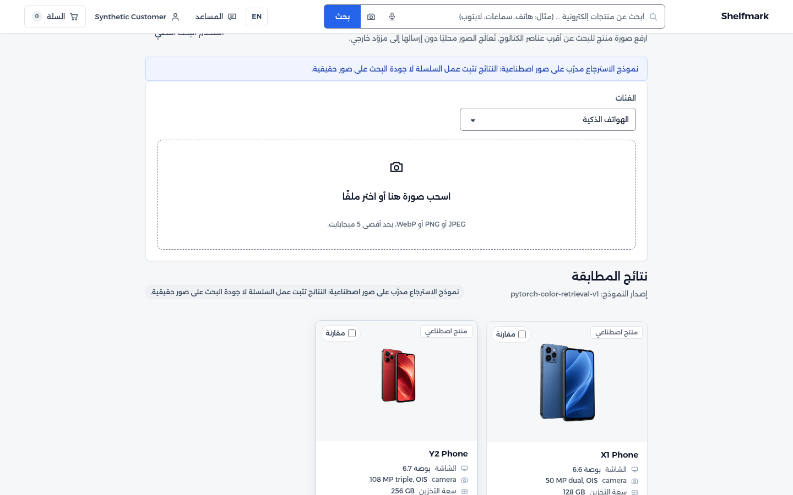
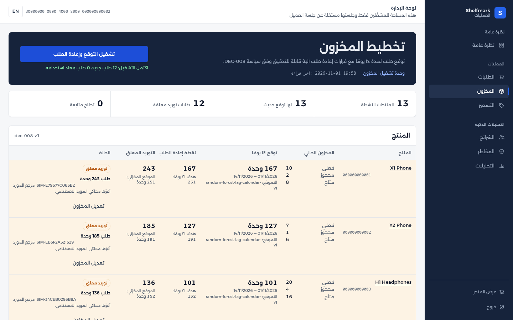
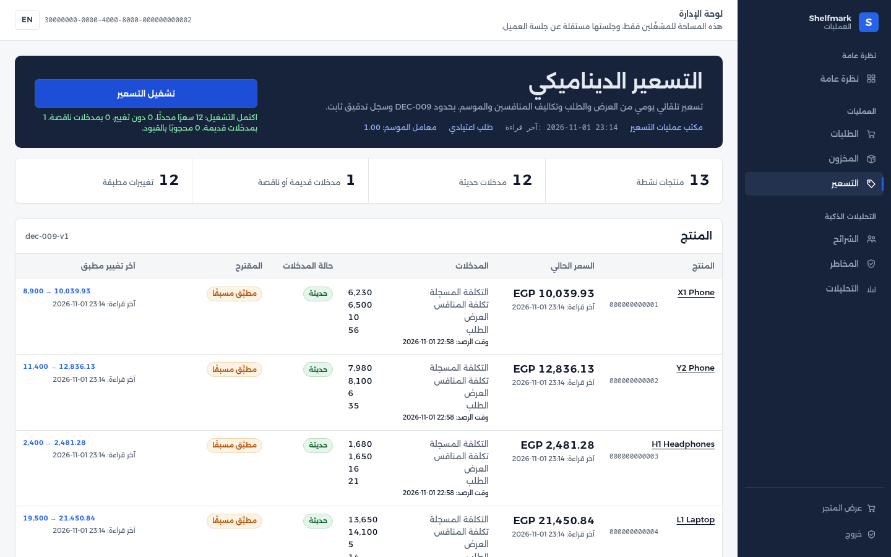
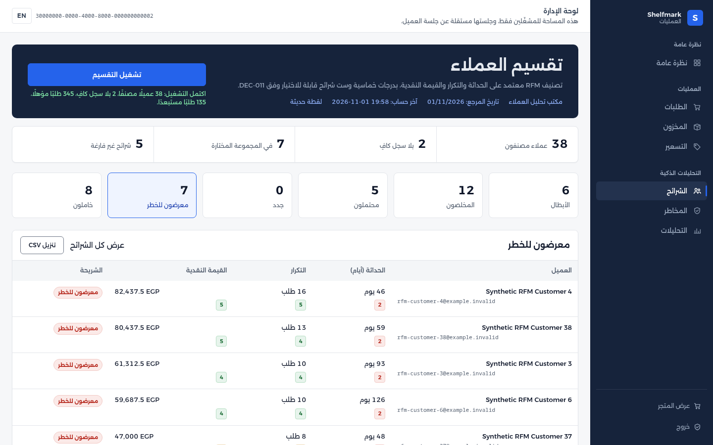
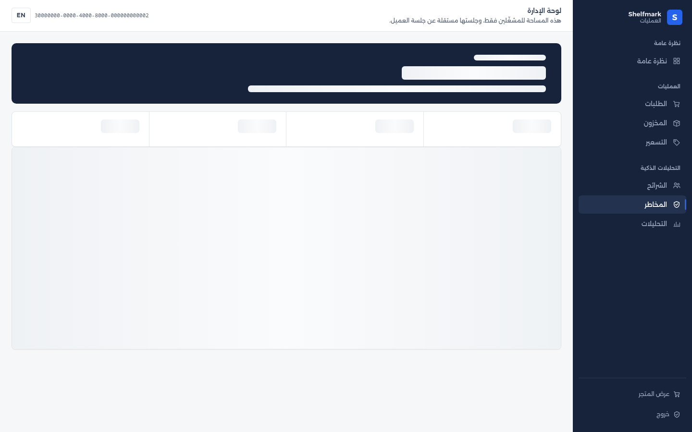
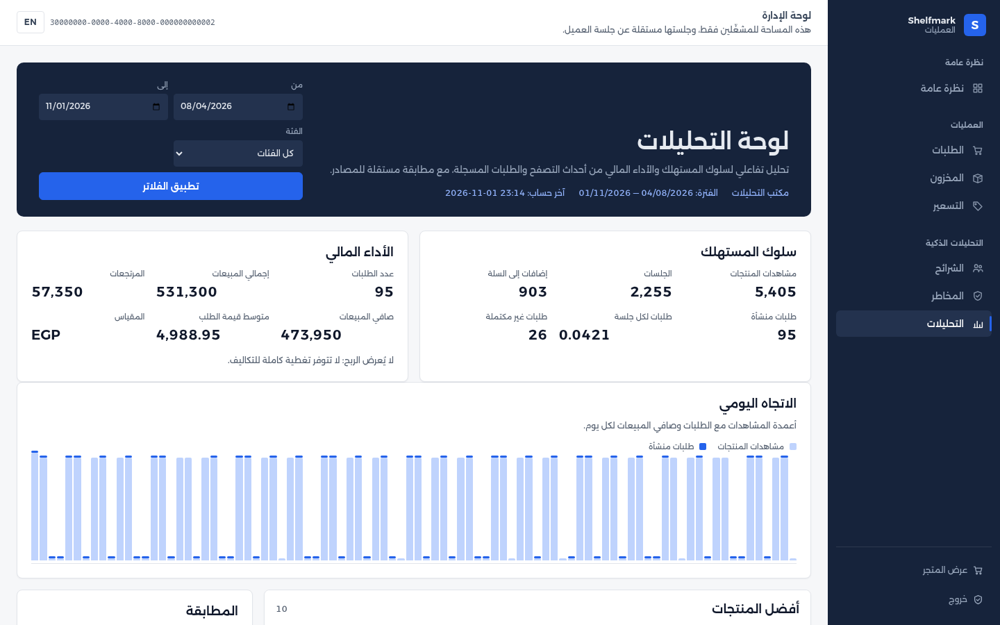
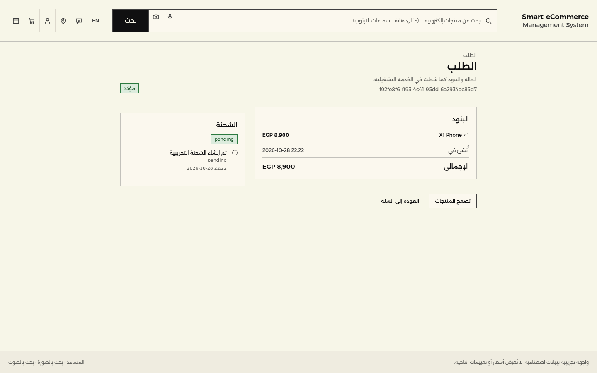
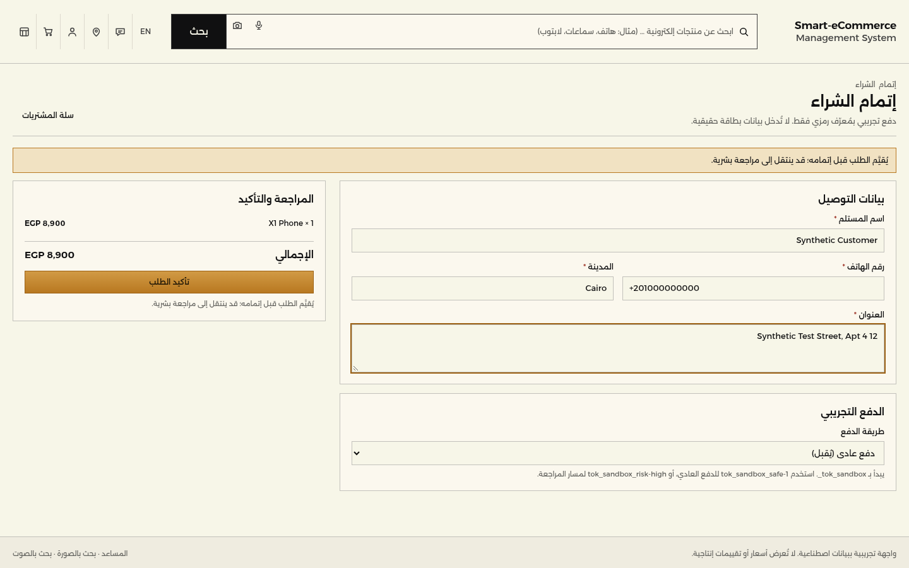

Graduation project · final presentation
Shelfmark
An AI-powered smart e-commerce management system: an Arabic-first
commerce platform with seven AI modules, back-office automation, and interactive
BI — implemented, measured, and honestly bounded.
Next.js · FastAPI · PostgreSQL · MongoDB
Scikit-learn · PyTorch · OpenAI
Docker
Every screen in this deck was captured from the running system. All data is
synthetic and labelled as such in the product.
1
Shelfmark
1 · Problem and objectives
Three objectives, seven smart modules, one back office
- OBJ-01 — personalised recommendations and shopping assistance in the customer journey.
- OBJ-02 — automate inventory, sales operations, and pricing from the same order records.
- OBJ-03 — interactive BI over consumer behaviour and financial performance.
Scope note: this is the specified commerce + AI scope — not a general ERP. The original seven modules are preserved, not narrowed.
| Module | Capability |
|---|
| SF-01 | Hybrid collaborative + content recommendations |
| SF-02 | Grounded assistant for inquiries, choice, shipments |
| SF-03 | Image search, voice search, dynamic facets |
| BO-01 | Demand forecast and automatic reordering |
| BO-02 | Dynamic pricing from supply, demand, rivals, season |
| BO-03 | RFM customer segmentation and campaign export |
| BO-04 | Trained fraud detection before completion |
| BI-01 | Consumer and financial dashboards with reconciliation |
2
Shelfmark
2 · Architecture
Two surfaces, two sessions, explicit ownership
browser ──► Next.js 16 (Arabic RTL storefront + back office)
│ server-only API credentials, no-store reads
▼
FastAPI ──► PostgreSQL price · stock · orders · RFM · risk
│ MongoDB descriptive catalog content
│ model artifacts (joblib / json)
▼
scheduled jobs: inventory · pricing · segmentation
PostgreSQL owns price, stock, and orders. MongoDB holds descriptive content only.
One canonical UUID links both stores, so a product can never have two prices.
- 34 API routes across catalog, commerce, identity, risk, and back office.
- 28 PostgreSQL tables across eight migrations; MongoDB validator and indexes.
- Separate customer and operator sessions: argon2id demo credentials, revocable database sessions, and two independent
httpOnly cookies; catalogue browsing stays public.
- Capability scopes (
risk:review, pricing:write, …) instead of a role tree.
- Typed failures: 404 for unknown, 503 for an active record whose other side is missing.
- Docker packaging for API, stores, jobs, and artifacts.
3
Shelfmark
3 · What was built
Every module carries a measured number
| Module | Evidence to show | Status |
|---|
| SF-01 recommendations | nDCG@10 1.0 vs popularity 0.690 (+44.83%) | verified on synthetic |
| SF-02 assistant | Grounded FAQ + catalog + own shipments; cross-customer denial | provider pending |
| SF-03 search | Image top-1 1.0, recall@3 1.0; facets and combined filters | image verified |
| BO-01 inventory | Holdout MAPE 3.35%; 13 forecasts, 12 reorders, 0 duplicates on rerun | verified on synthetic |
| BO-02 pricing | ±20% cap, cost+5% floor, 24h freshness, immutable audit | verified on synthetic |
| BO-03 segmentation | 38 classified, 2 without history, six segments, CSV export | verified on synthetic |
| BO-04 fraud | Recall 83.3% at 7.8% FPR, before order completion | verified on sandbox |
| BI-01 dashboards | Consumer + financial KPIs, filters recompute, sources reconcile | verified on synthetic |
"Verified on synthetic" means the pipeline, the policy, and the integration are proven —
not that commercial quality is claimed. Section 6 states each limit.
4
Shelfmark
4 · SF-01 recommendations
Ranked from real browsing and purchase history — and honest when exhausted
1.0hybrid nDCG@10 (holdout)
0.690popularity baseline
+44.8%relative lift
- Collaborative similarity from item co-occurrence, content similarity from product text, combined 60/40 with a popularity tie-breaker.
- Signals come from the application's own records: browsing events and confirmed purchases.
- Seen items are excluded — the rail on the right shows what happens when the customer has seen everything.
The seeded demonstration customer has already seen all four products covered by the trained artifact, so the rail states that instead of inventing a fallback. The API run and the recorded evaluation carry the ranking evidence.
Product page · recommendation section with the exhausted state
GET /v1/recommendations?limit=5
{
"strategy": "hybrid",
"basis": { "browsing_events": 226, "purchased_items": 15 },
"items": []
}
Seen items are absent from items; with no unseen candidate the
response is empty and the rail says so.
5
Shelfmark
5 · SF-02 / SF-03 assistant and search
Grounded answers, image retrieval, and honest failure states
SF-02 · Assistant
- Grounded in project-authored bilingual FAQ, the live catalog, and the customer's own shipments.
- Cross-customer shipment lookup is denied; other customers' records never appear.
- Without a provider key the surface returns a typed 503 instead of inventing an answer.
SF-03 · Search
- PyTorch colour-feature retrieval: top-1 1.0, recall@3 1.0 on the synthetic set.
- Dynamic facets combine with the image query and with catalog filters.
- Voice transcription targets
gpt-transcribe; the provider call is pending a key.
Image search · Phones filter applied, X1 ranked first

6
Shelfmark
6 · BO-01 predictive inventory
Forecast → reorder → supplier acknowledgement, without duplicates
3.35%MAPE, non-zero demand, final 28-day holdout
12reorders created on the first run
0duplicates when the run is repeated
- Leakage-safe lag, rolling, and calendar features; a chronological holdout, never a random split.
- DEC-008 policy: 14-day forecast, 7-day lead time, 7-day safety stock, reorder to 21-day cover.
- Pending replenishment counts toward inventory position, so a live reorder is not re-ordered.
- The supplier is a simulator: failures are preserved for retry and reruns are idempotent.
Back office · inventory run (12 new reorders, 0 reused)

7
Shelfmark
7 · BO-02 dynamic pricing
Bounded, evidenced, and never retroactive
- DEC-009: demand relative to supply, competitor cost, and a dated season calendar.
- At most ±20% per run and never below recorded cost + 5%.
- Inputs older than 24 hours block a change; one observation can never produce two changes.
- Every change stores the full input snapshot as an immutable audit row.
Rehearsal run: X1 Phone 8,900 → 10,039.93 after the first run,
then → 12,047.91 after a new observation with a much higher competitor cost.
The second move is +19.98% — inside the 20% cap.
The order placed before the change still shows 8,900.
Order prices are snapshots; repricing never rewrites history.
Back office · pricing run with inputs, proposals, and audit trail

8
Shelfmark
8 · BO-03 RFM segmentation
Six documented segments from a reproducible window
38customers classified
2counted as insufficient history, not scored zero
6selectable segments with a CSV export
- DEC-011: rolling 365-day window, quintile scores on recency, frequency, and monetary value.
- Eligible orders are paid or completed minus refunds; cancelled and failed orders are excluded.
- Clicking a segment filters the members; the CSV row count matches the selected group exactly.
- The policy matrix beside the table shows the rules, so a score is always explainable.
Back office · At Risk selected, 7 members in the group

9
Shelfmark
9 · BO-04 fraud detection
Risk is assessed before an order can complete
83.3%recall on a sealed holdout
7.8%false-positive rate
0.699review threshold
- Logistic baseline compared against histogram gradient boosting; the threshold is selected on validation and sealed before the holdout.
- A flagged or failed assessment sends the order to review — no order completes first.
- Allow and decline are operator decisions, recorded once, with score, model version, and reasons.
- Missing model artefacts fail closed to review, never to approval.
Back office · review queue, model card, and audited decisions

10
Shelfmark
10 · BI-01 dashboards
Interactive analysis that reconciles against its own sources
- Consumer panel: views, sessions, add-to-carts, created orders, orders per session, unfulfilled orders.
- Financial panel: order count, gross sales, refunds, net sales, average order value.
- Date and category filters recompute every metric; the phones filter reduces views and revenue and still reconciles.
- Reconciliation compares reported totals with values recomputed from order lines — a mismatch is shown, not hidden.
Profit is not displayed. There is no complete cost coverage, so a profit figure would be an invention.
Rehearsal window (90 days): 5,405 views · 2,255 sessions · 94 orders · EGP 524,050 gross · EGP 466,800 net.
Back office · analytics, Arabic RTL

11
Shelfmark
11 · Commerce spine
Checkout, risk, and history that cannot be rewritten
- Exact EGP totals from decimal storage, never floats.
- Current stock and price are checked at checkout; a changed cart is refused.
- Idempotent checkout: ten simultaneous retries of one key created exactly one order.
- Immutable order snapshots: repricing never changes a placed order.
- Ownership-scoped reads: another customer's order returns 404 with no data.
A confirmed order creates a shipment with bilingual events, visible only to its owner.
The operator queue finds that order under orders:read, and the same
page advances its shipment, refunds, or cancels it under orders:write
— every action attributed to the operator.
Customer order · confirmed, with its shipment timeline

12
Shelfmark
12 · Engineering decisions
Four decisions worth defending
- DEC-007 — competitors' costs. The source wording is preserved literally; with no real feed, the values are imported synthetically and labelled, not quietly reinterpreted.
- DEC-009 / DEC-011 — policies before code. Pricing bounds and the RFM window are fixed decisions, so the same input always produces the same output.
- Idempotency everywhere. Checkout keys, reorder keys, one change per pricing observation, and one RFM snapshot per customer per date.
- Fail closed, state honestly. A missing artefact is a typed 503 or a review — never a silent pass. Stale inputs block a price change. Insufficient history is counted, not scored zero. Profit is omitted without cost coverage.
13
Shelfmark
13 · Testing and quality
Stage 4 evidence, mapped requirement by requirement
| Suite | Result |
|---|
| API unit and route tests | 143 passed |
| Contract and database tests | 18 passed (PostgreSQL 18.6, MongoDB 8.2) |
| Black-box integration flows | 9 passed |
| Security and isolation checks | 7 passed |
| Workload checks (10 req/s, 100 sessions) | 3 passed |
| axe-core WCAG 2.2 AA (46 pages, AR + EN) | 0 violations |
Rehearsing the demo script caught a production-build defect that unit tests could not see:
every back-office server action failed because a "use server" module exported a state
object. Fixed, rebuilt, re-rehearsed to zero drift.
| Path | Target | Measured p95 |
|---|
| Catalog list | ≤500 ms | 8.5 ms sustained · 156.6 ms at 100 sessions |
| Recommendations | ≤500 ms | 33.8 ms · 252.6 ms |
| Analytics (month) | ≤2 s | 30.3 ms |
| Checkout with risk | ≤2 s | ≤330 ms |
Full report: docs/test-report.md. Rehearsal log: docs/presentation/rehearsal.md.
14
Shelfmark
14 · Limitations
What this system is not
- No live AI provider proof. The assistant and voice surfaces are verified with an injected provider; no
OPENAI_API_KEY was available, so both return a typed 503 by design.
- Synthetic data only. Every model, dashboard, and evaluation uses synthetic or sandbox records. Nothing here is a commercial claim.
- No cloud deployment. Docker packaging and the deployment runbook are verified; the AWS placement needs account access and has not been executed.
- Accessibility is automated only. axe-core and a keyboard smoke test pass; no manual screen-reader session was run.
- Authentication is a labelled demo harness. Local
.invalid accounts, argon2id hashes, and revocable database sessions; there is no OAuth/OIDC, email verification, email-based password reset, or MFA, and no production identity-provider claim.
- The storefront is deliberately Arabic-first RTL. It recorded 58.53% against the approved LTR reference instead of the 72% target; that mismatch is documented rather than restated as a pass.
- The recommendation artifact covers four products, so the seeded customer has nothing unseen left to rank — the rail says so instead of faking a result.
15
Shelfmark
15 · Demo
One flow, every capability
- Sign in — customer at
/login, operator at /backoffice/login.
- Discovery — filter, image search, and an honest rejection message.
- Recommendations — the exhausted state, then the API evidence.
- Checkout — normal payment confirms; a high-risk token goes to review; the operator allows it, opens it in
/backoffice/orders, and advances its shipment.
- Inventory — run the forecast twice; the second run creates nothing.
- Pricing — run it, show the audit, then show that a placed order keeps its price.
- Segmentation — run it, filter a segment, export the CSV.
- Analytics — apply a category filter and read the reconciliation.
The rehearsal script drives this exact sequence against a freshly seeded stack and finished with
zero drift across 26 captured screens.
Checkout · the risk assessment happens before completion

16
Conclusion
All seven modules and BI are implemented and evidenced
What remains is access — a provider key, a cloud account, a manual accessibility pass —
not missing functionality.
Source: README.md
Evidence: docs/test-report.md
Rehearsal: docs/presentation/rehearsal.md
Reproducible from the repository: Docker Compose for the stack, uv for the suites,
npm for the storefront and the accessibility gate.
17